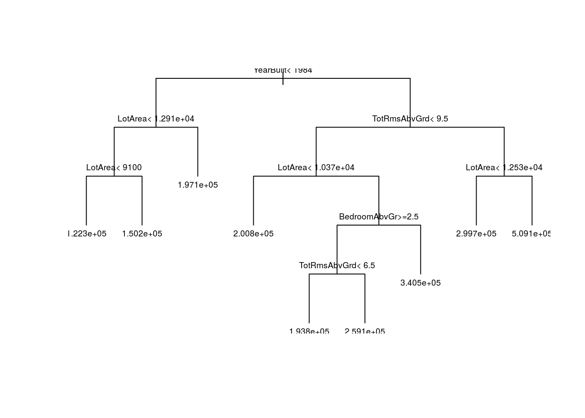
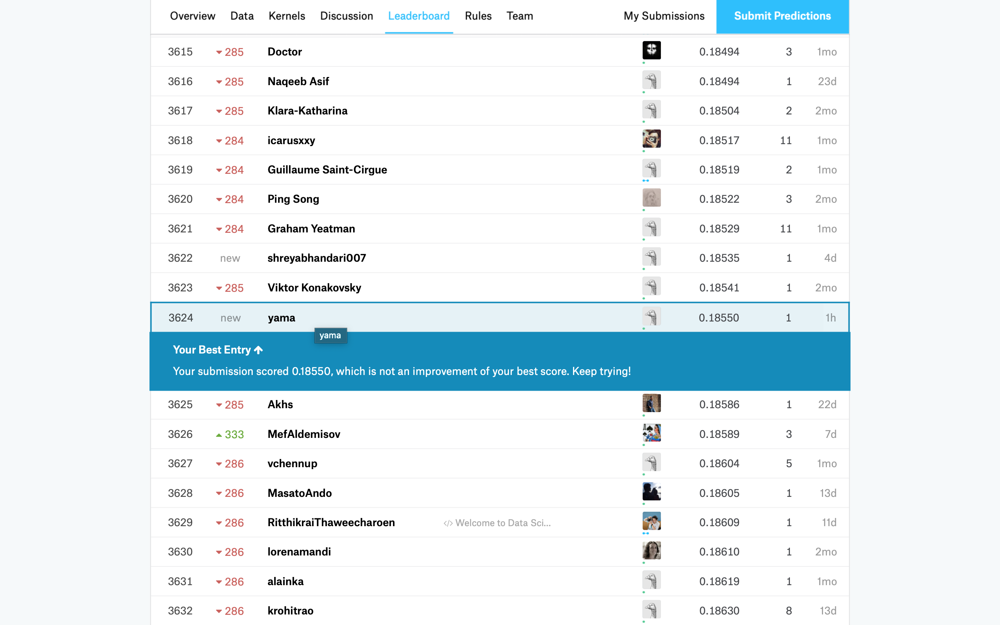

Intro & Background
I’ve just joined the House Prices: Advanced Regression Techniques Competition, whch is a Getting Started competition.
Kaggle describes this competition as follows:
Ask a home buyer to describe their dream house, and they probably won’t begin with the height of the basement ceiling or the proximity to an east-west railroad. But this playground competition’s dataset proves that much more influences price negotiations than the number of bedrooms or a white-picket fence.
With 79 explanatory variables describing (almost) every aspect of residential homes in Ames, Iowa, this competition challenges us to predict the final price of each home.
SO, we’ll try to answer the question:
Can you figure out how much a house will sell for?
The Data
Accessing Data
Now, we’ll download and get the data directly from the competitions data here.
The Ames Housing dataset was compiled by Dean De Cock for use in data science education. It’s an incredible alternative for data scientists looking for a modernized and expanded version of the often cited Boston Housing dataset.
Here’s a brief file description;
train.csv - the training set
test.csv - the test set
data_description.txt - full description of each column, originally prepared by Dean De Cock but lightly edited to match the column names used here
sample_submission.csv - a benchmark submission from a linear regression on year and month of sale, lot square footage, and number of bedrooms
You can find the data dictionaries for on https://www.kaggle.com/c/house-prices-advanced-regression-techniques/data
Loading Data
We’ll load the data and run the code below to create an object called iowa_data.
# You'd read the data and store data in a tibble
iowa_data <- read_csv("data/raw_data/train.csv") ## Parsed with column specification:
## cols(
## .default = col_character(),
## Id = col_double(),
## MSSubClass = col_double(),
## LotFrontage = col_double(),
## LotArea = col_double(),
## OverallQual = col_double(),
## OverallCond = col_double(),
## YearBuilt = col_double(),
## YearRemodAdd = col_double(),
## MasVnrArea = col_double(),
## BsmtFinSF1 = col_double(),
## BsmtFinSF2 = col_double(),
## BsmtUnfSF = col_double(),
## TotalBsmtSF = col_double(),
## `1stFlrSF` = col_double(),
## `2ndFlrSF` = col_double(),
## LowQualFinSF = col_double(),
## GrLivArea = col_double(),
## BsmtFullBath = col_double(),
## BsmtHalfBath = col_double(),
## FullBath = col_double()
## # ... with 18 more columns
## )## See spec(...) for full column specifications.# we'll make sure Condition1 is a factor & not a char
iowa_data$Condition1 <- as.factor(iowa_data$Condition1)Exploratory Analysis of Housing Prices Data
# now we'll summarize the iowa_data dataframe
summary(iowa_data)## Id MSSubClass MSZoning LotFrontage
## Min. : 1.0 Min. : 20.0 Length:1460 Min. : 21.00
## 1st Qu.: 365.8 1st Qu.: 20.0 Class :character 1st Qu.: 59.00
## Median : 730.5 Median : 50.0 Mode :character Median : 69.00
## Mean : 730.5 Mean : 56.9 Mean : 70.05
## 3rd Qu.:1095.2 3rd Qu.: 70.0 3rd Qu.: 80.00
## Max. :1460.0 Max. :190.0 Max. :313.00
## NA's :259
## LotArea Street Alley LotShape
## Min. : 1300 Length:1460 Length:1460 Length:1460
## 1st Qu.: 7554 Class :character Class :character Class :character
## Median : 9478 Mode :character Mode :character Mode :character
## Mean : 10517
## 3rd Qu.: 11602
## Max. :215245
##
## LandContour Utilities LotConfig
## Length:1460 Length:1460 Length:1460
## Class :character Class :character Class :character
## Mode :character Mode :character Mode :character
##
##
##
##
## LandSlope Neighborhood Condition1 Condition2
## Length:1460 Length:1460 Norm :1260 Length:1460
## Class :character Class :character Feedr : 81 Class :character
## Mode :character Mode :character Artery : 48 Mode :character
## RRAn : 26
## PosN : 19
## RRAe : 11
## (Other): 15
## BldgType HouseStyle OverallQual OverallCond
## Length:1460 Length:1460 Min. : 1.000 Min. :1.000
## Class :character Class :character 1st Qu.: 5.000 1st Qu.:5.000
## Mode :character Mode :character Median : 6.000 Median :5.000
## Mean : 6.099 Mean :5.575
## 3rd Qu.: 7.000 3rd Qu.:6.000
## Max. :10.000 Max. :9.000
##
## YearBuilt YearRemodAdd RoofStyle RoofMatl
## Min. :1872 Min. :1950 Length:1460 Length:1460
## 1st Qu.:1954 1st Qu.:1967 Class :character Class :character
## Median :1973 Median :1994 Mode :character Mode :character
## Mean :1971 Mean :1985
## 3rd Qu.:2000 3rd Qu.:2004
## Max. :2010 Max. :2010
##
## Exterior1st Exterior2nd MasVnrType MasVnrArea
## Length:1460 Length:1460 Length:1460 Min. : 0.0
## Class :character Class :character Class :character 1st Qu.: 0.0
## Mode :character Mode :character Mode :character Median : 0.0
## Mean : 103.7
## 3rd Qu.: 166.0
## Max. :1600.0
## NA's :8
## ExterQual ExterCond Foundation
## Length:1460 Length:1460 Length:1460
## Class :character Class :character Class :character
## Mode :character Mode :character Mode :character
##
##
##
##
## BsmtQual BsmtCond BsmtExposure
## Length:1460 Length:1460 Length:1460
## Class :character Class :character Class :character
## Mode :character Mode :character Mode :character
##
##
##
##
## BsmtFinType1 BsmtFinSF1 BsmtFinType2 BsmtFinSF2
## Length:1460 Min. : 0.0 Length:1460 Min. : 0.00
## Class :character 1st Qu.: 0.0 Class :character 1st Qu.: 0.00
## Mode :character Median : 383.5 Mode :character Median : 0.00
## Mean : 443.6 Mean : 46.55
## 3rd Qu.: 712.2 3rd Qu.: 0.00
## Max. :5644.0 Max. :1474.00
##
## BsmtUnfSF TotalBsmtSF Heating HeatingQC
## Min. : 0.0 Min. : 0.0 Length:1460 Length:1460
## 1st Qu.: 223.0 1st Qu.: 795.8 Class :character Class :character
## Median : 477.5 Median : 991.5 Mode :character Mode :character
## Mean : 567.2 Mean :1057.4
## 3rd Qu.: 808.0 3rd Qu.:1298.2
## Max. :2336.0 Max. :6110.0
##
## CentralAir Electrical 1stFlrSF 2ndFlrSF
## Length:1460 Length:1460 Min. : 334 Min. : 0
## Class :character Class :character 1st Qu.: 882 1st Qu.: 0
## Mode :character Mode :character Median :1087 Median : 0
## Mean :1163 Mean : 347
## 3rd Qu.:1391 3rd Qu.: 728
## Max. :4692 Max. :2065
##
## LowQualFinSF GrLivArea BsmtFullBath BsmtHalfBath
## Min. : 0.000 Min. : 334 Min. :0.0000 Min. :0.00000
## 1st Qu.: 0.000 1st Qu.:1130 1st Qu.:0.0000 1st Qu.:0.00000
## Median : 0.000 Median :1464 Median :0.0000 Median :0.00000
## Mean : 5.845 Mean :1515 Mean :0.4253 Mean :0.05753
## 3rd Qu.: 0.000 3rd Qu.:1777 3rd Qu.:1.0000 3rd Qu.:0.00000
## Max. :572.000 Max. :5642 Max. :3.0000 Max. :2.00000
##
## FullBath HalfBath BedroomAbvGr KitchenAbvGr
## Min. :0.000 Min. :0.0000 Min. :0.000 Min. :0.000
## 1st Qu.:1.000 1st Qu.:0.0000 1st Qu.:2.000 1st Qu.:1.000
## Median :2.000 Median :0.0000 Median :3.000 Median :1.000
## Mean :1.565 Mean :0.3829 Mean :2.866 Mean :1.047
## 3rd Qu.:2.000 3rd Qu.:1.0000 3rd Qu.:3.000 3rd Qu.:1.000
## Max. :3.000 Max. :2.0000 Max. :8.000 Max. :3.000
##
## KitchenQual TotRmsAbvGrd Functional Fireplaces
## Length:1460 Min. : 2.000 Length:1460 Min. :0.000
## Class :character 1st Qu.: 5.000 Class :character 1st Qu.:0.000
## Mode :character Median : 6.000 Mode :character Median :1.000
## Mean : 6.518 Mean :0.613
## 3rd Qu.: 7.000 3rd Qu.:1.000
## Max. :14.000 Max. :3.000
##
## FireplaceQu GarageType GarageYrBlt GarageFinish
## Length:1460 Length:1460 Min. :1900 Length:1460
## Class :character Class :character 1st Qu.:1961 Class :character
## Mode :character Mode :character Median :1980 Mode :character
## Mean :1979
## 3rd Qu.:2002
## Max. :2010
## NA's :81
## GarageCars GarageArea GarageQual GarageCond
## Min. :0.000 Min. : 0.0 Length:1460 Length:1460
## 1st Qu.:1.000 1st Qu.: 334.5 Class :character Class :character
## Median :2.000 Median : 480.0 Mode :character Mode :character
## Mean :1.767 Mean : 473.0
## 3rd Qu.:2.000 3rd Qu.: 576.0
## Max. :4.000 Max. :1418.0
##
## PavedDrive WoodDeckSF OpenPorchSF EnclosedPorch
## Length:1460 Min. : 0.00 Min. : 0.00 Min. : 0.00
## Class :character 1st Qu.: 0.00 1st Qu.: 0.00 1st Qu.: 0.00
## Mode :character Median : 0.00 Median : 25.00 Median : 0.00
## Mean : 94.24 Mean : 46.66 Mean : 21.95
## 3rd Qu.:168.00 3rd Qu.: 68.00 3rd Qu.: 0.00
## Max. :857.00 Max. :547.00 Max. :552.00
##
## 3SsnPorch ScreenPorch PoolArea PoolQC
## Min. : 0.00 Min. : 0.00 Min. : 0.000 Length:1460
## 1st Qu.: 0.00 1st Qu.: 0.00 1st Qu.: 0.000 Class :character
## Median : 0.00 Median : 0.00 Median : 0.000 Mode :character
## Mean : 3.41 Mean : 15.06 Mean : 2.759
## 3rd Qu.: 0.00 3rd Qu.: 0.00 3rd Qu.: 0.000
## Max. :508.00 Max. :480.00 Max. :738.000
##
## Fence MiscFeature MiscVal MoSold
## Length:1460 Length:1460 Min. : 0.00 Min. : 1.000
## Class :character Class :character 1st Qu.: 0.00 1st Qu.: 5.000
## Mode :character Mode :character Median : 0.00 Median : 6.000
## Mean : 43.49 Mean : 6.322
## 3rd Qu.: 0.00 3rd Qu.: 8.000
## Max. :15500.00 Max. :12.000
##
## YrSold SaleType SaleCondition SalePrice
## Min. :2006 Length:1460 Length:1460 Min. : 34900
## 1st Qu.:2007 Class :character Class :character 1st Qu.:129975
## Median :2008 Mode :character Mode :character Median :163000
## Mean :2008 Mean :180921
## 3rd Qu.:2009 3rd Qu.:214000
## Max. :2010 Max. :755000
## Each little chunk of output (e.g. “X1”, “Suburb”, “Address”, “Rooms”) tell us about a specific column in our dataframe.
If the column is numeric, though, it will list information about the mean, median, 25th and 75th quartiles, minimum and maximum.
The median year in which the houses in this dataset were built is 1973 (YearBuilt). In addtion, we’ll find that the maximum number or rooms are 14 (TotRmsAbvGrd).
Prediction Data Analysis
Data Splitting
We’ll take our dataset and split it into a training set and a tuning set.
## get Index for training set
set.seed(123)
trainIndex <- createDataPartition(iowa_data$Id, p = .7,
list = FALSE,
times = 1)
## split into training and tuning set
iowa_train <- iowa_data %>% slice(trainIndex)
iowa_tune <- iowa_data %>% slice(-trainIndex)Decision Tree analysis
We can then fit a new model using our training data and test it using our testing data.
We’ll be predicting the SalePrice variable. And we start with a narrower set of numeric variables and fit a model that can predict your target variable using the following predictors;
LotArea
YearBuilt
Condition1 (how close to the main road the house is)
FullBath
BedroomAbvGr
TotRmsAbvGrd
We’re going to use the rpart() function from the rpart package to build our decision tree using the prediction target (SalePrice) and predictors (set of numeric variables).
# build a model to predict housing prices in Iowa using our training set
fit <- rpart(SalePrice ~ TotRmsAbvGrd + FullBath + LotArea + Condition1 +
YearBuilt + BedroomAbvGr, data = iowa_train)
# get the mean average error for our model
mae(model = fit, data = iowa_tune)## [1] 37534.09Then, we just started with one called Mean Absolute Error (also called MAE) for summarizing model quality.
The prediction error for each house is:
\(error=actual−predicted\)
With the MAE metric, we take the absolute value of each error. This converts each error to a positive number. We then take the average of those absolute errors. This is our measure of model quality.
We can get the MAE for our model using the mae() function, from the modelr package. The mae() function takes in a model and the dataset to test it against.
On average, our predictions are off by about 37534.09 dollars.
Now, we built prediction model, so we can actually look at the tree it has built.
# plot our regression tree
plot(fit, uniform=TRUE)
# add text labels & make them 60% as big as they are by default
text(fit, cex=.6)
We can now use our fitted model to predict the prices of some houses, using the predict() function for our tuning set.
print("Making predictions for the following 5 houses:")
## [1] "Making predictions for the following 5 houses:"
print(head(iowa_tune))
## # A tibble: 6 x 81
## Id MSSubClass MSZoning LotFrontage LotArea Street Alley LotShape
## <dbl> <dbl> <chr> <dbl> <dbl> <chr> <chr> <chr>
## 1 2 20 RL 80 9600 Pave <NA> Reg
## 2 4 70 RL 60 9550 Pave <NA> IR1
## 3 5 60 RL 84 14260 Pave <NA> IR1
## 4 6 50 RL 85 14115 Pave <NA> IR1
## 5 7 20 RL 75 10084 Pave <NA> Reg
## 6 10 190 RL 50 7420 Pave <NA> Reg
## # ... with 73 more variables: LandContour <chr>, Utilities <chr>,
## # LotConfig <chr>, LandSlope <chr>, Neighborhood <chr>,
## # Condition1 <fct>, Condition2 <chr>, BldgType <chr>, HouseStyle <chr>,
## # OverallQual <dbl>, OverallCond <dbl>, YearBuilt <dbl>,
## # YearRemodAdd <dbl>, RoofStyle <chr>, RoofMatl <chr>,
## # Exterior1st <chr>, Exterior2nd <chr>, MasVnrType <chr>,
## # MasVnrArea <dbl>, ExterQual <chr>, ExterCond <chr>, Foundation <chr>,
## # BsmtQual <chr>, BsmtCond <chr>, BsmtExposure <chr>,
## # BsmtFinType1 <chr>, BsmtFinSF1 <dbl>, BsmtFinType2 <chr>,
## # BsmtFinSF2 <dbl>, BsmtUnfSF <dbl>, TotalBsmtSF <dbl>, Heating <chr>,
## # HeatingQC <chr>, CentralAir <chr>, Electrical <chr>, `1stFlrSF` <dbl>,
## # `2ndFlrSF` <dbl>, LowQualFinSF <dbl>, GrLivArea <dbl>,
## # BsmtFullBath <dbl>, BsmtHalfBath <dbl>, FullBath <dbl>,
## # HalfBath <dbl>, BedroomAbvGr <dbl>, KitchenAbvGr <dbl>,
## # KitchenQual <chr>, TotRmsAbvGrd <dbl>, Functional <chr>,
## # Fireplaces <dbl>, FireplaceQu <chr>, GarageType <chr>,
## # GarageYrBlt <dbl>, GarageFinish <chr>, GarageCars <dbl>,
## # GarageArea <dbl>, GarageQual <chr>, GarageCond <chr>,
## # PavedDrive <chr>, WoodDeckSF <dbl>, OpenPorchSF <dbl>,
## # EnclosedPorch <dbl>, `3SsnPorch` <dbl>, ScreenPorch <dbl>,
## # PoolArea <dbl>, PoolQC <chr>, Fence <chr>, MiscFeature <chr>,
## # MiscVal <dbl>, MoSold <dbl>, YrSold <dbl>, SaleType <chr>,
## # SaleCondition <chr>, SalePrice <dbl>
print("The predictions are")
## [1] "The predictions are"
print(predict(fit, head(iowa_tune)))
## 1 2 3 4 5 6
## 150232.8 150232.8 259061.7 340455.9 200815.1 122309.3
print("Actual price")
## [1] "Actual price"
print(head(iowa_tune$SalePrice))
## [1] 181500 140000 250000 143000 307000 118000So, as you can above, the first house we predicted cost 181,500 dollars and you predicted it would cost 150,232.8 dollars the error is 31,267.2 dollars.
Then now, we are setting the tree depth with the maxdepth argument to control overfitting vs underfitting.
We can use a utility function to help compare MAE scores from different values for maxdepth:
# a function to get the maximum average error for a given max depth. You should pass in
# the target as the name of the target column and the predictors as vector where
# each item in the vector is the name of the column
get_mae <- function(maxdepth, target, predictors, training_data, tuning_data){
# turn the predictors & target into a formula to pass to rpart()
predictors <- paste(predictors, collapse="+")
formula <- as.formula(paste(target,"~",predictors,sep = ""))
# build our model
model <- rpart(formula, data = training_data,
control = rpart.control(maxdepth = maxdepth))
# get the mae
mae <- mae(model, tuning_data)
return(mae)
}We can use a for-loop to compare the accuracy of models built with different values for maxdepth. In this case, the lowest MAE is actually 5.
# target & predictors to feed into our formula
target <- "SalePrice"
predictors <- c("TotRmsAbvGrd", "FullBath", "LotArea", "Condition1", "YearBuilt", "BedroomAbvGr")
# get the MAE for maxdepths between 1 & 10
for(i in 1:10){
mae <- get_mae(maxdepth = i, target = target, predictors = predictors,
training_data = iowa_train, tuning_data = iowa_tune)
print(glue::glue("Maxdepth: ",i,"\t MAE: ",mae))
}## Maxdepth: 1 MAE: 46982.6810339195
## Maxdepth: 2 MAE: 41968.2267110074
## Maxdepth: 3 MAE: 39012.1922817192
## Maxdepth: 4 MAE: 38863.924322096
## Maxdepth: 5 MAE: 37534.0937255204
## Maxdepth: 6 MAE: 37534.0937255204
## Maxdepth: 7 MAE: 37534.0937255204
## Maxdepth: 8 MAE: 37534.0937255204
## Maxdepth: 9 MAE: 37534.0937255204
## Maxdepth: 10 MAE: 37534.093725520437,534.09 is the lowest mean average error for this dataset, which is given this dataset and our current stopping condition, 6 is the maximum number of nodes.
Random Forests analysis
# fit a random forest model to our training set
fitRandomForest <- randomForest(SalePrice ~ TotRmsAbvGrd + FullBath + LotArea + Condition1 +
YearBuilt + BedroomAbvGr, data = iowa_train)
# get the mean average error for our new model, based on our tuning set
mae(model = fitRandomForest, data = iowa_tune)## [1] 30894.18On average, this predictions are off by around 30,894.18 dollars. This is a big improvement over our previous best decision tree.
Conclusion
We analyzed and tried to answer the question:
Can you figure out how much a house will sell for?
Then, I’ve submitted above prediction values for the House Prices: Advanced Regression Techniques Competition. As a result, I’ve ranked at 3624th.
